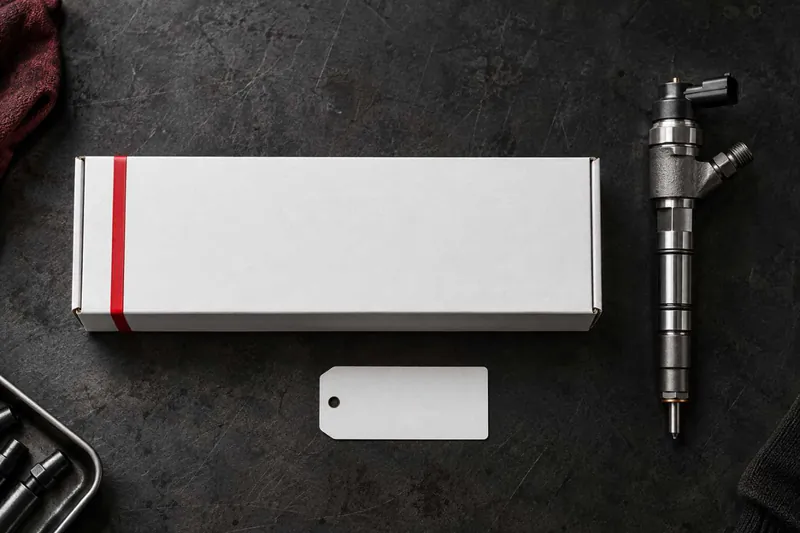
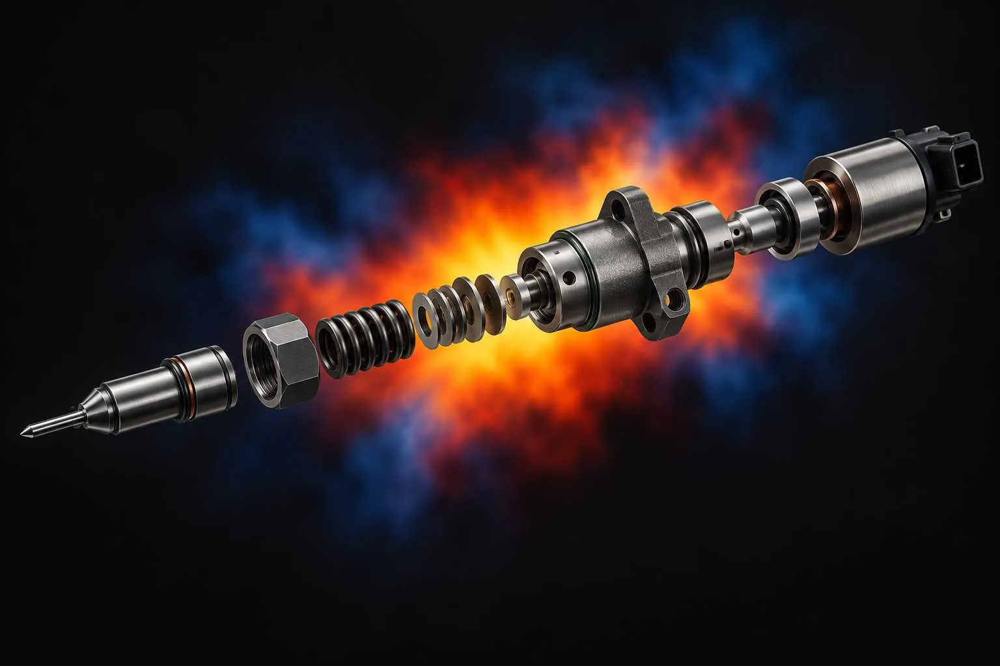
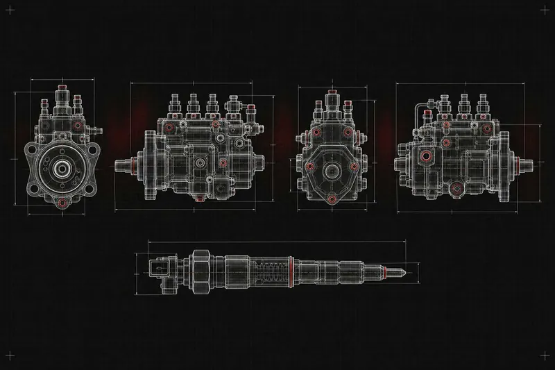
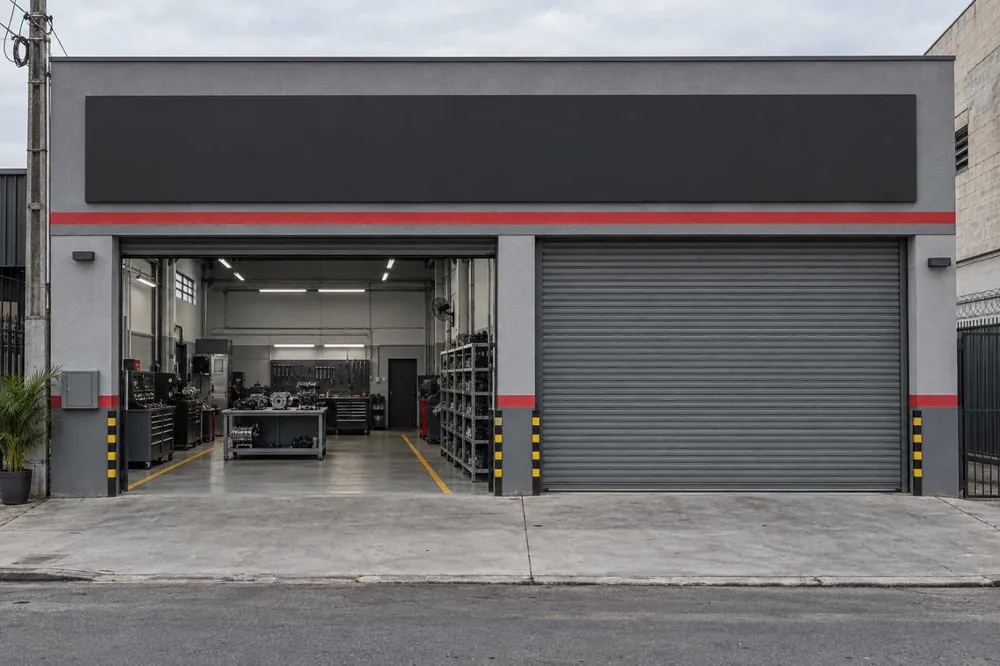

Bicos injetores
Avaliação, recuperação e teste de vazão, vedação e pulverização. Common rail e mecânicos, linha leve e pesada.

Recuperamos bombas e bicos injetores para quem depende do diesel todo dia. Cada peça é testada em bancada antes de voltar para o motor.

Avaliação, recuperação e teste de vazão, vedação e pulverização. Common rail e mecânicos, linha leve e pesada.

Recuperação com controle de pressão e calibração em bancada.
Medimos a peça antes de qualquer serviço. Você sabe o que precisa ser feito antes de aprovar o orçamento.
Atendemos: picapes, vans e utilitários, caminhões, frotas e máquinas agrícolas.

A Cabral Diesel é uma oficina de família, com [X] anos de trabalho em injeção diesel. Atendemos mecânicos, frotistas e motoristas que não podem ficar parados.
Nosso trabalho é só bomba e bico. Por isso cada peça recebe o tempo de bancada que precisa.
Nosso trabalho é bomba e bico. Se a leitura da oficina ou do scanner apontar falha na injeção, traga ou envie a peça para avaliação.
Pode. Mande modelo, ano e o que está acontecendo. Uma foto ou vídeo ajuda.
Sim. Estamos em Itaquaquecetuba – SP e recebemos peças de oficinas, frotas e proprietários de todo o Brasil.
Depende da peça e do que a avaliação mostrar. Informamos o prazo junto com o orçamento.
Mande o modelo, o ano e o sintoma do veículo. Respondemos pelo WhatsApp.
Chamar no WhatsApp